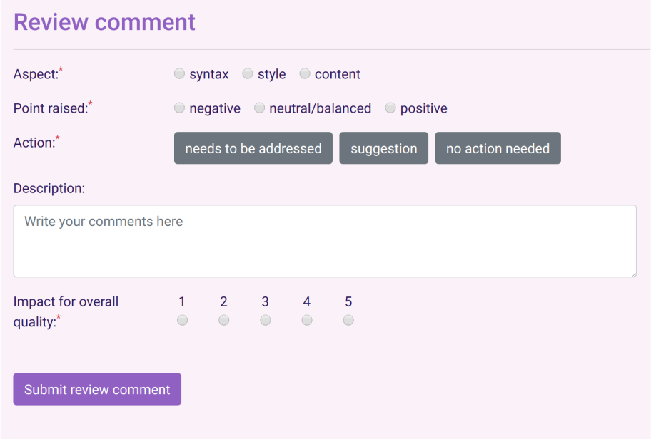
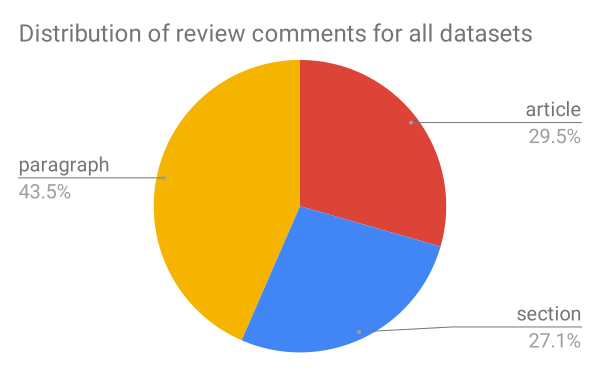
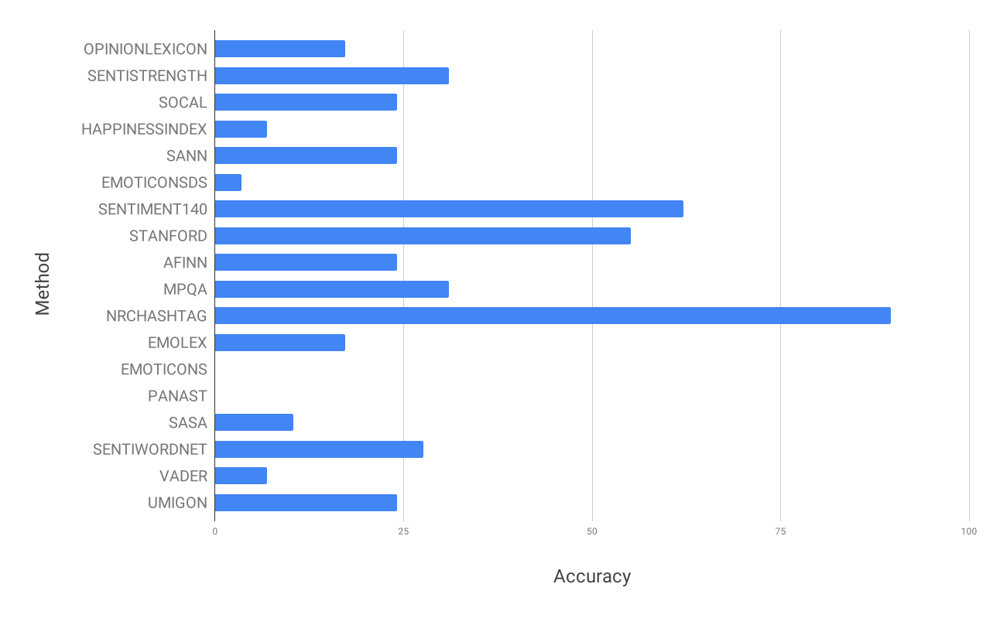
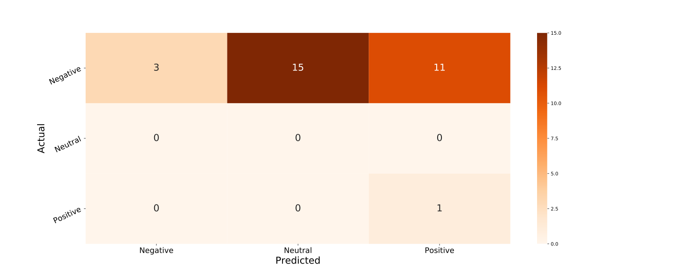
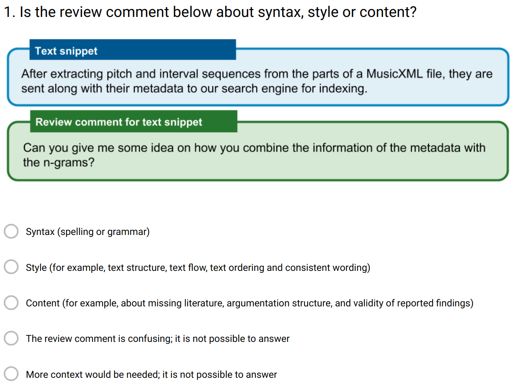
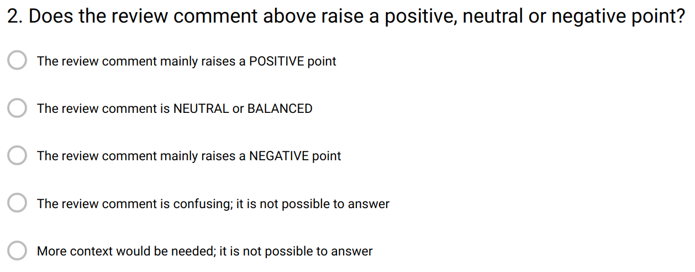
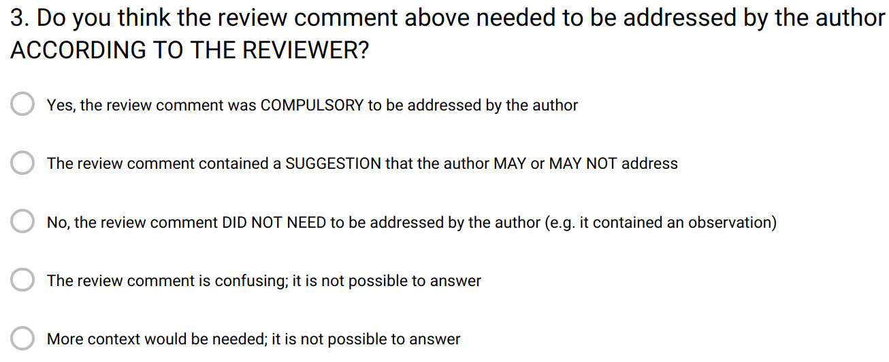
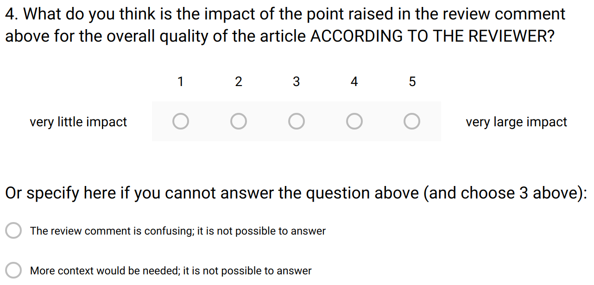
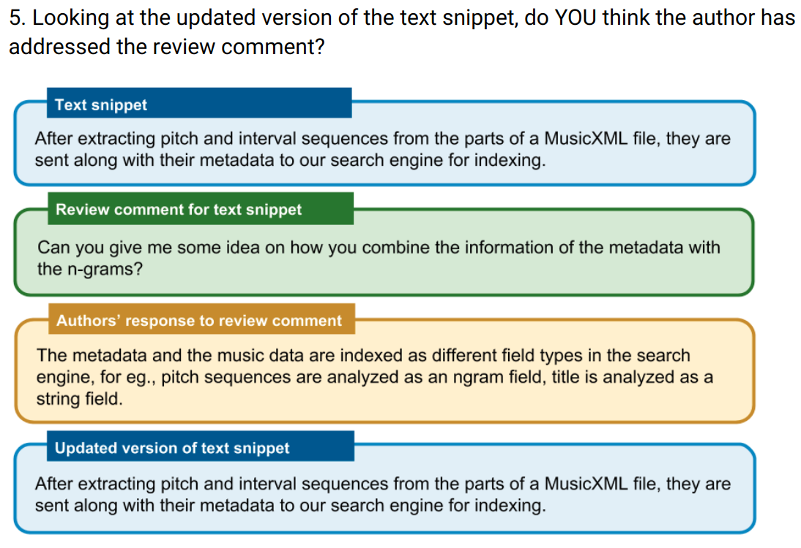
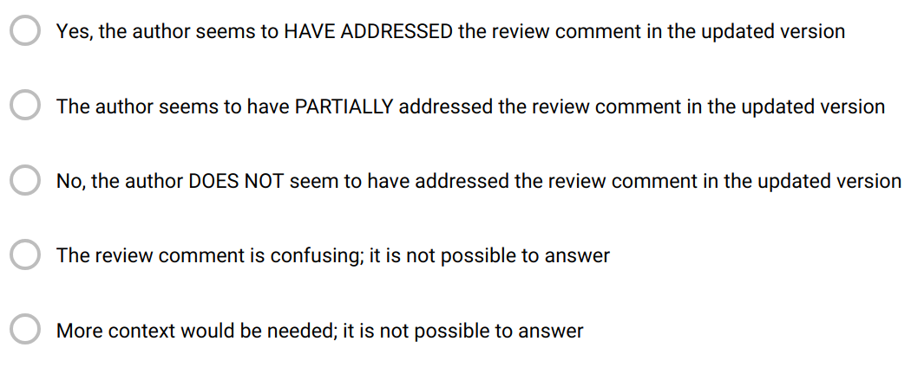

A new model for scientific publishing at a granular level
Linkflows Project Updates
6th June 2019
These slides: https://tinyurl.com/Linkflows-Updates-6-June-2019
How to keep up?
- It takes time to publish! even ~ 1 year
- It takes time to stay up to date!
- ~22 hours/week for epidemiologists (2004)
- 2000 papers/day in PubMed (2018)
Scientific publishing: still in the Middle Ages?
- Initial paradigm of publishing: the same!
- Article PDFs: coarse-grained structures in which scientific contributions are communicated
- Measure of quality: reviewing
Research question
Can a fine-grained model of the scientific publishing workflow help us make reviewing processes more efficient and more accurate?A model of the processes of fine-grained reviews

Reviews can be made more structured and precise
Can reviewing be automated (and to what extent) by writing structured fine-grained reviews?
- Granular reviews address snippets of text
- Peer-reviewers rate own written review snippet
- Positivity/Negativity: positive, neutral, negative
- Aspects discussed in the review: syntax, style, content
- Use crowd/experts to see if reviews were addressed
Selected datasets
- Recent publications with open peer-reviews
- Journals and conferences in the Computer Science field
- Articles and reviews selected randomly
| Data Science Journal 2017-2018 | Semantic Web Journal 2018 | PeerJ CS Journal 2018 | Openreview.net 2018 | ||||||
|---|---|---|---|---|---|---|---|---|---|
| ISWC-DeSemWeb | ISMIR-WoRMS | ||||||||
| Total | Selected | Total | Selected | Total | Selected | Total | Selected | Total | Selected |
| 13 | 7 | 38 | 7 | 26 | 7 | 10 | 7 | 11 | 7 |
What part of an article does a review comment target?
Most Sentiment Analysis methods perform badly
Sentiment Analysis: Confusion Matrix
Aspect: The main aspect that the review comment mentions about the text snippet
Positivity/Negativity: The point raised in the review comment by the reviewer about the text snippet
Action needed: The action that needs to be taken by the author(s) of the text snippet according to the reviewer
Overall impact on quality: The impact of the point raised in the review comment on the overall quality of the article according to the reviewer
Checking whether a review comment was addressed as intended by the authors (1)
Checking whether a review comment was addressed as intended by the authors (2)
What is still needed to finalize this research
- Finish conducting experiments
- Sentiment Analysis methods vs. results user study
- Differences ground-truth vs. experts
- Differences ground-truth vs. crowd
- Comparison experts vs. crowd